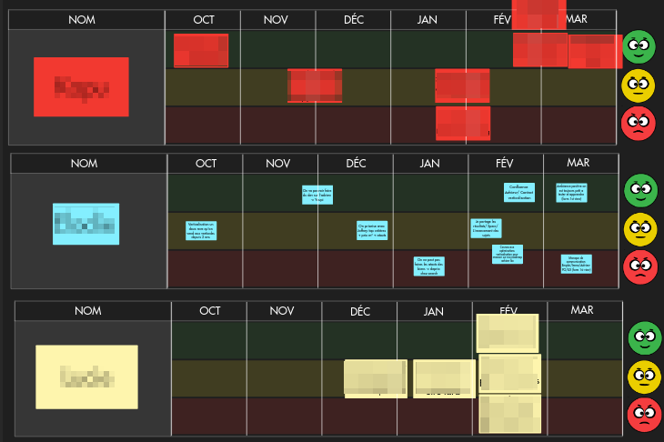

Comment Leboncoin a réimaginé ses ateliers d’innovation et de résolution de problèmes pour pleinement exploiter les atouts de la collaboration visuelle à distance
Avec plus 250 millions de pages visitées chaque jour, Leboncoin.fr est l’une des plateformes web ayant le plus d’audience en France. Si vous ne connaissez pas ce service, imaginez un immense vide-grenier qui regroupe 25 millions de petites annonces en ligne. Celles-ci vont des meubles aux vêtements, en passant par la vente de voitures d’occasion et la location immobilière, et bien plus encore ! Le site est détenu par le groupe Leboncoin, qui gère également, parmi tant d’autres, les plateformes web Videdressing.com (mode et luxe) et Largus.fr (vente de voitures d’occassion).
Leboncoin emploie 1 500 personnes, parmi lesquelles 250 ingénieurs. Basées à Paris, les équipes tech et produit sont organisées en 35 feature teams, elles-mêmes regroupées dans 4 tribus. Le management est animé d’une vision novatrice et promeut une organisation Agile, ouverte et apprenante, au sein de laquelle les équipes et les tribus disposent d’une grande liberté de décision et d’action.
Vous pouvez découvrir plus en détail l’“Open Organizational Work” du groupe Leboncoin dans cet article écrit par Julien Jouhault, le CTO du groupe.
Wilfrid Lancelle a rejoint le groupe Leboncoin, en 2011, pour un poste de développeur. Il est ensuite devenu Manager et, depuis 5 ans, occupe un rôle de Coach en Organisation Apprenante. Sa mission consiste à aider les personnes et les équipes à adopter une démarche expérimentale, d’apprentissage, et de partage des apprentissages (clarifier les intentions, imaginer des solutions, mettre en œuvre, observer le résultat, puis recommencer).
Guillaume Grillat, de son côté, anime la communauté tech du groupe depuis un peu moins d’un an. Son principal objectif est de créer des espaces d’échange au sein desquels les équipes tech internes et celles d’autres organisations peuvent partager leurs expériences respectives en matière de choix technologique, d’architecture, de framework, et d’organisation. Il organise des événements collaboratifs (workshops, sessions Q&A avec des experts du marché, meetups, conférences) avec des communautés tech externes, qui peuvent être d'autres grosses plateformes qui connaissent les mêmes enjeux que leboncoin, des réseaux de professionnels, ou encore des écoles d'informatique.

“Je craignais que les participants n’aient pas suffisamment d’espace pour réfléchir et s’exprimer librement”.
Avant que l’épidémie de covid-19 ne nous contraigne tous à travailler à distance, Wilfrid avait une certitude : “faire mon travail à distance, c’est impossible !”. Fortement inspiré de méthodes d’animation telles que le Consensus Systémique, les Six Thinking Hats et l’approche Solution Focus, Wilfrid tenait à ce que les participants puissent se déplacer, échanger les uns avec les autres, placer des post-it sur les murs, et collaborer de façon spontanée et interactive.
“Quand nous sommes tous présents dans la même pièce, je sais ce qu’il faut faire pour animer efficacement un atelier. Alors que, à distance, les techniques d’animation que j’aime utiliser ne sont plus valables.” Wilfrid doutait de sa capacité à animer un atelier de façon satisfaisante dans ces conditions. Plus précisément, il craignait que “les participants n’aient pas suffisamment d’espace pour réfléchir et s’exprimer librement, ne suivent plus correctement l’agenda, ne restent plus concentrés sur les objectifs, et n’interviennent plus de leur propre initiative.”
Avec l’aide de Draft, Wilfrid a découvert une façon efficace de répliquer les interactions du monde réel dans le monde virtuel. Plus encore, il a imaginé de nouvelles opportunités de collaboration et d’interaction qui n’étaient pas forcément possibles avant. “Désormais, je peux démarrer un atelier à tout moment, en invitant n’importe qui à rejoindre un board. Par ailleurs, le mode isoloir offre aux participants un espace leur permettant de partager leurs idées sans s’influencer les uns les autres. Enfin, j’ai remarqué que les participants sont moins hésitants avant de placer un post-it sur le mur.”

Exploiter toutes les caractéristiques d’un mur virtuel collaboratif
Par exemple, au cours d’un atelier dans lequel les participants devaient placer des post-it le long d’une frise chronologique, Wilfrid constata que le fait de directement poser son post-it —grisé—, au bon endroit sur la frise et de façon concomitante à sa rédaction, rendait la restitution beaucoup plus fluide. En effet, cela évite que, à chaque dépôt de post-it sur le board, les participants se demandent où il faudrait le poser et initient des discussions peu constructives du type : “mais c’était avant. Non, c’était après !”. Les participants ont plutôt l’opportunité de se focaliser sur leur compréhension respective des situations décrites en prenant davantage de temps pour raconter leur vécu et leur ressenti.
Et parce que tout le monde adore jouer avec un nouvel outil, la découverte de Draft par les participants qui ne connaissent pas l’outil est devenue une sorte d’ice breaker naturel. “Les gens jouent instinctivement avec les objets, font des blagues sur les post-it, et s’amusent en découvrant l'outil pour la première fois. C’est une façon idéale d’impliquer tous les participants dès les premières minutes !
And because everyone loves playing with new tools, learning the basics of Draft has, almost by default, become a sort of “ice breaker” at the beginning of these workshops: “People naturally poke around a bit, add jokes as sticky-notes, and have a little fun when they discover the tool for the first time. It’s a great way to get to everyone involved!”
En outre, collaborer sur un board virtuel permet de facilement étendre un même atelier sur plusieurs sessions distinctes. Décomposer des problématiques complexes en plusieurs sujets, au périmètre circonscrit et traités les uns après les autres, rend la résolution de ces problèmes plus simple et efficace.
Un bon exemple de l’exploitation de cette caractéristique de la collaboration à distance est le projet de redéfinition par les équipes des missions des QA Engineers et des QA Analysts sur lequel Wilfrid a facilité un atelier. En effet, documenter la réflexion sur un board virtuel leur a permis de prolonger les possibilités de collaboration et de résolution de problème au-delà de la fin de l'atelier. “Nous n’avons plus à quitter un atelier en ayant produit un livrable définitif ou arrêté des décisions hâtives. Nous pouvons sereinement tirer le maximum du temps que nous passons ensemble, et repousser à de futurs ateliers les questions auxquelles nous n’avons pas encore trouvé de réponses.”
Finalement, en repensant ses ateliers, Wilfrid a pu recréer sur Draft un environnement dans lequel les participants sont davantage mis en confiance. De cette façon, ils peuvent partager librement leurs idées et leurs opinions, sans que la distance ne soit un quelconque obstacle.
D’un simple mur collaboratif à un véritable document visuel
Guillaume a commencé à utiliser Draft dans le cadre de l’organisation de la première conférence tech lbc² qui s’est déroulée en mars 2021. Après avoir recueilli les idées et les attentes des équipes tech, il a regroupé un ensemble de sujets et identifié trois thèmes de conférence potentiels : “Draft m'a aidé à arbitrer les choix de sujets à aborder lors de ma conférence. Je me rappelle d'un atelier avec mon CTO où il manipulait lui-même les tickets de sujets à prioriser par catégorie. En 15 minutes, nous avions notre stratégie au clair !”.
Pour identifier les problèmes rencontrés par les équipes tech internes et trouver la bonne façon de les mettre en relation avec des équipes externes à même de les aider, Guillaume a besoin d’un outil polyvalent et flexible, qui permet à la fois de rassembler des informations, poser et manipuler ses idées, cartographier les problèmes, partager le document avec les parties prenantes, et faciliter le processus de prise de décision, tout en documentant la réflexion et gardant trace des décisions prises. “Draft pourrait être l’outil idéal”, confie Guillaume.